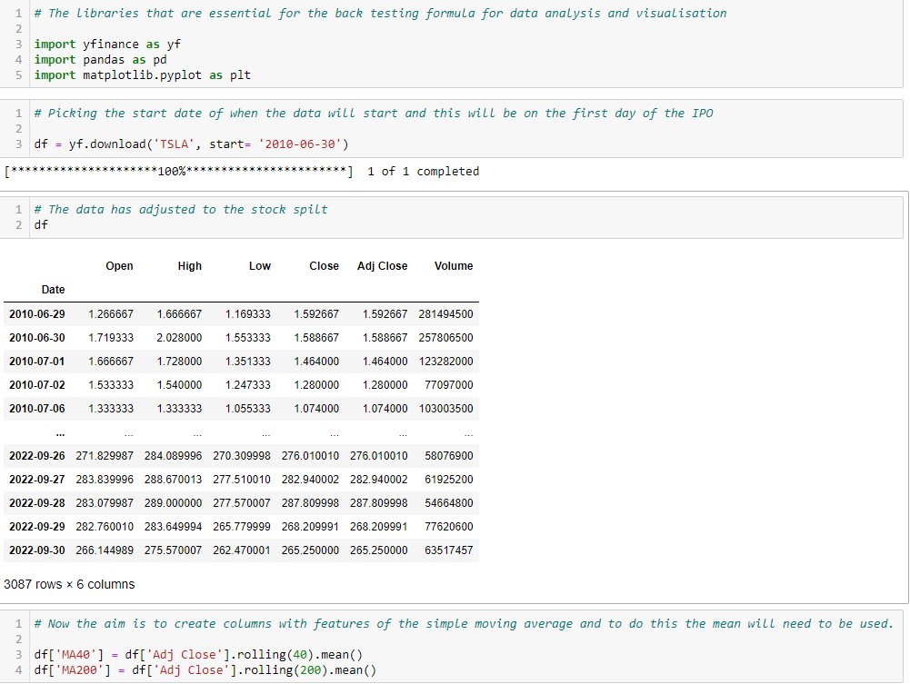

TESLA "TSLA"
Growth stock - Simple Moving Average Analysis

Will holding a TLSA stock in its early growth stage help me attain my dream car?
Lets start by analysing the potential of implementing an algorithm system rather than an investing discretionary approach by weighting up the pros and cons. First, lets mention the stock splits that occurred to date from June 29, 2010 to October 01, 2022.The stock spilts that occurred since TSLA went public
Tesla went public on June 29, 2010 at a price of $17 per share where there was a stock spilt on August 31, 2020 for 5 to 1 and another stock spilt occurred on August 25, 2022 for a 3 for 1. This equated to a total of 15 stocks if the first purchase happened in June 29, 2010 ending on October 01, 2022.Total amount if a discretionary approach was used as an investment decision
If a discretionary approach was used to make an investment decision and was held until September 27, 2022, the total amount of the investment from 1 stock will be a total of USD $276.01 multiply that by 15 stocks equalling USD $4140.15.We make an assumption that the stock was sold at September 27, 2022 and want to determine what will be the return on investment on the stock.
In percentage terms from a $17 investment and holding it until September 27, 2022 will equal to a 243 times return which is a 24,300% increase.
Simple moving average algorithm system implemented on June 29, 2010
Lets assume I have the ability to time travel and knew TSLA would reach such heights where investing 1 share of TSLA implementing a simple moving average strategy rather than a discretionary decision to understand the business rather than understand the director, cash-flow, business objective and financial statements of the company.Exception based decision
Since I made the exception of ignoring my sentiment views on TSLA's future and decided to code an algorithm system based on buy and sell entries that is decided by technical analysis. The properties must be verified in the formula on how the diagnostic elements will be considered:- Simple Moving Average 40.
- Simple Moving Average 200.
- Buying Signal: If the MA40 is above the MA of 200 days but is not the day before, then buy.
- Selling Signal: If the Moving Average of 200 days is above the moving average of 40 days but is not the day before, then sell.
Building the backtesting Python program to analyse the above considerations
Now we want to find out the difference between whether to invest wholeheartedly believing the stock has great potential or allow an algorithm system to make the decision for us.The first step in our analysis is to determine the process, what to import and what will our analysis be all about. The focus is to backtest a simple moving average of 40 and 200.
The following code with the description written is displayed:

The above is to be coded in ascending order and the question that will need to be asked is whether the total real profit is 54 times the starting amount
or the ending amount of the last purchase price.
To answer the above quesiton, what percentage of capital increased from each intervention of the buy and sell signal that was created. To calculate this, we require locating the rows and that had a buy signal and correspond the sell signal and see the capital gain from each intervention period. This is showed in the image below: Also, disregard the Sell signal in row 94 and Buy signal in 2880 as this goes outside the spectrum of the data for analysis. The analysis relies on the entry on Adjusted Close Price and locating each point is crucial for the analysis. So the aim is to locate the column of Adj Close which is 6 and to verify the analysis correlates with the above answer.
- Buy Row 138 = 1.88 (Starting Capital)
- Sell Row 304 = 2.25 (Percentage gained = 19.5%)
- Buy Row 421 = 2.35
- Sell Row 939 = 14.62 (Percentage gained = 622%)
- Buy Row 1039 = 16.76
- Sell Row 1152 = 15.45 (Percentage loss = 8.5%)
- Buy Row 1264 = 16.49
- Sell Row 1307 = 14.65 (Percentage loss = 12.5%)
- Buy Row 1323 = 14.84
- Sell Row 1372 = 13.68 (Percentage loss = 8.5%)
- Buy Row 1457 = 16.97
- Sell Row 1673 = 20.59 (Percentage gain = 21.1%)
- Buy Row 1828 = 20.67
- Sell Row 1866 = 17.55 (Percentage loss = 17.78%)
- Buy Row 1921 = 23.07
- Sell Row 1976 = 20.53 (Percentage loss = 12.32%)
- Buy Row 2153 = 21.08
- Sell Row 2569 = 226.61 (Percentage gain = 1075%)
- Buy Row 2594 = 229.07
- Sell Row 2798 = 221.30 (Percentage loss = 3.5%)
Back-testing results versus discretionary long term approach
The analysis indicates that the capital invested from the beginning to end will eventuate to being 11,693% increase in capital return, excluding transaction cost.Conclusion
This analysis showed that a stock in their early growth stages and implementing an algorithm strategy long term was seen unfavourable.The summary is to deploy an algorithm system when volatility is high where price had a balanced reasoning in the financial market.
Also, the optimal solution to get the best results investing in the financial markets is a mixture of both intrepreting the business potential or prospects versus understanding the technical analysis side on whether algorithm or machine learning should be implemented for the stock of interest.
If the stock is in their early stages or have a growth prospect about the company, it potentially could be better off having a longer term view investing in the company as TSLA sets the example.